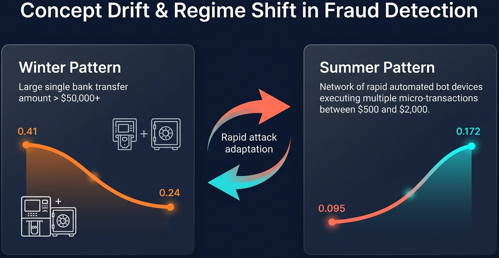
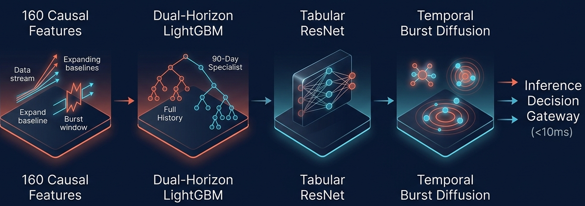
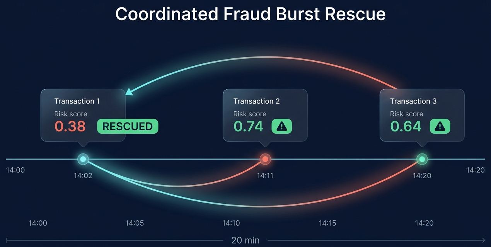

Catching fraud that moves — without ever seeing the future.
Extreme 1.76% imbalance compounded by acute summer behavioral drift across a 2-month blind test gap.

Every stage built from scratch on competition data — zero external models or pretrained weights.

0.48 × Full + 0.52 × 90d → 0.88 × Trees + 0.12 × ResNet → ±30m Diffusion
Rigor cuts both ways: it's how we found real gains, and how we caught ourselves fooling ourselves.
mergesort on (timestamp, transaction_id) to eliminate shuffle drift.closed='left' via automated checks. Seed variance measured across 5 seeds; only architectural shifts beating it were kept.scale_pos_weight pushed scores to 1.0, distorting ranking calibration under PR-AUC. Unweighted log-loss produced an immediate +0.026 on the leaderboard.Demonstrating concrete qualitative output lift alongside transparent failure mode disclosure.

Causally-safe features and burst-aware propagation aren't just leaderboard tricks — the same design could run in a live payment pipeline, adapting to new attack patterns without waiting for a retrain.
Not part of the timed 3-minute talk — reference only if judges want more.
Pruned from 220+ candidates by information density. Point-in-time causality mechanically asserted.
device_id_nunique_customer_for_device_prior and is_new_device_for_customer without graph DB overhead.
(timestamp, transaction_id).
Trees capture sharp categorical rules; the neural net smooths the boundaries between them.
A confirmed fraud sharply raises the odds its near-in-time neighbors are fraud too.
Every technique that shipped, and exactly what it was worth — locally and on the public leaderboard.
| # | Milestone | What changed | Holdout | Public LB |
|---|---|---|---|---|
| 0 | Baseline | Raw tabular features, default LightGBM | 0.1664 | 0.1664 |
| 1 | Features | Expanding baselines, MAD z-scores, windows | 0.5090 | 0.5105 |
| 2 | Calibration | Removed naive scale_pos_weight | 0.5204 | 0.5395 |
| 3 | Pruning | Density pruning to Top 160 core features | 0.5269 | — |
| 4 | Dual-Horizon | 48% full-train + 52% 90-day specialist | 0.5284 | — |
| 5 | Tree-Neural | 88% trees + 12% Tabular ResNet | 0.5298 | — |
| 6 | Propagation | Sliding LOO diffusion over ±30m window | 0.5359 | 0.56548 |